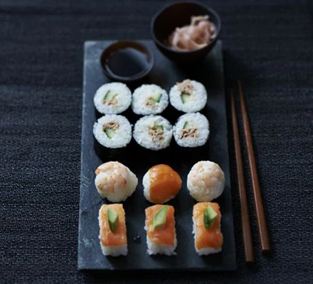

Believe it or not, you don't have to be an expert to make amazing sushi!
This sushi recipe is simple and delicious. It is a fun recipe, and after making it a few times, you will be a sushi pro!
Ingredients
For the Sushi Rice:
- 1 cup sushi rice (short-grain rice)
- 1 1/4 cups water
- 2 tbsp rice vinegar
- 1 tbsp sugar
- 1/2 tsp salt
For the Rolls:
- 4 sheets of nori (seaweed)
- 1 cucumber, julienned
- 1 avocado, sliced
- 1/2 lb (225g) imitation crab sticks or fresh crab meat
- Soy sauce, for dipping
- Pickled ginger (optional)
- Wasabi (optional)
Steps
-
Prepare the sushi rice:
- Rinse the sushi rice under cold water until the water runs clear.
- Combine the rice and water in a rice cooker and cook according to the rice cooker's instructions. Alternatively, bring the water and rice to a boil in a pot, reduce the heat to low, cover, and simmer for 18-20 minutes.
- emove from heat and let it sit covered for 10 minutes. In a small saucepan, heat the rice vinegar, sugar, and salt over low heat until the sugar and salt dissolve. Do not let it boil.
- Transfer the cooked rice to a large bowl and gently fold in the vinegar mixture. Allow the rice to cool to room temperature.
-
Assemble the sushi rolls:
- Place a bamboo sushi mat on a flat surface and cover it with plastic wrap. Place a sheet of nori, shiny side down, on the mat.
- Wet your hands with water to prevent the rice from sticking. Take a handful of sushi rice and spread it evenly over the nori, leaving about 1 inch (2.5 cm) at the top edge uncovered.
- Arrange a few slices of cucumber, avocado, and crab sticks horizontally across the middle of the rice.
- Using the bamboo mat, carefully roll the sushi away from you, applying gentle pressure to shape the roll. Seal the edge of the nori with a little water.
-
Slice the sushi rolls:
- Using a sharp knife, slice the sushi roll into 6-8 pieces. Wipe the knife with a damp cloth between cuts to ensure clean slices.
-
Serve:
- Arrange the sushi pieces on a plate and serve with soy sauce, pickled ginger, and wasabi on the side.